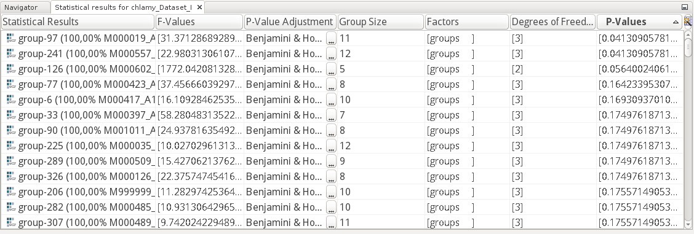

Maui provides a tabular view for statistical results like
To open the statistics view, select Window → Statistics. If you then select a statistics container in the project explorer, the statistics view will display the contents of that descriptor for each peak group individually.
The Anova descriptor in Maui is modeled to report the information available from the R aov method, after performing a
Left-clicking a column will update the sort order of all entries. Left-clicking a row will update the active selection and will notify any registered views to update. In case of the Anova descriptor, a selected row will update the mass spectrum view to show the mass spectra of the peaks contained in the corresponding peak group.
Right-clicking a row opens a context-specific menu that provides further actions.
Double-clicking a row opens the properties view of the selected entry.